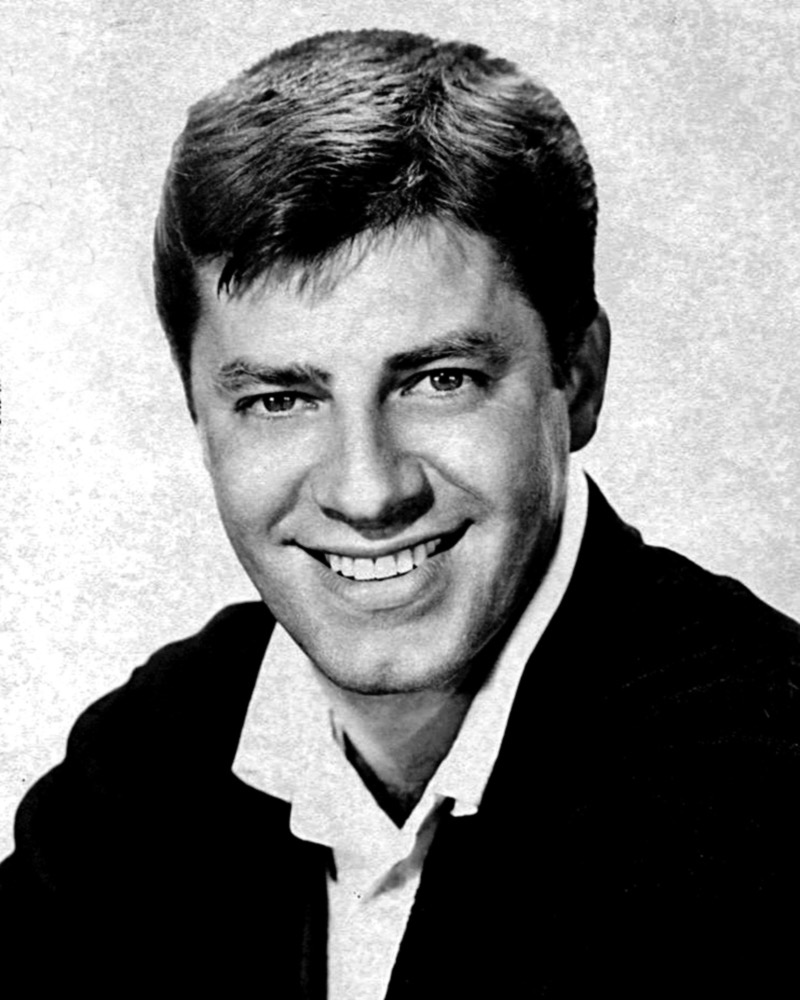
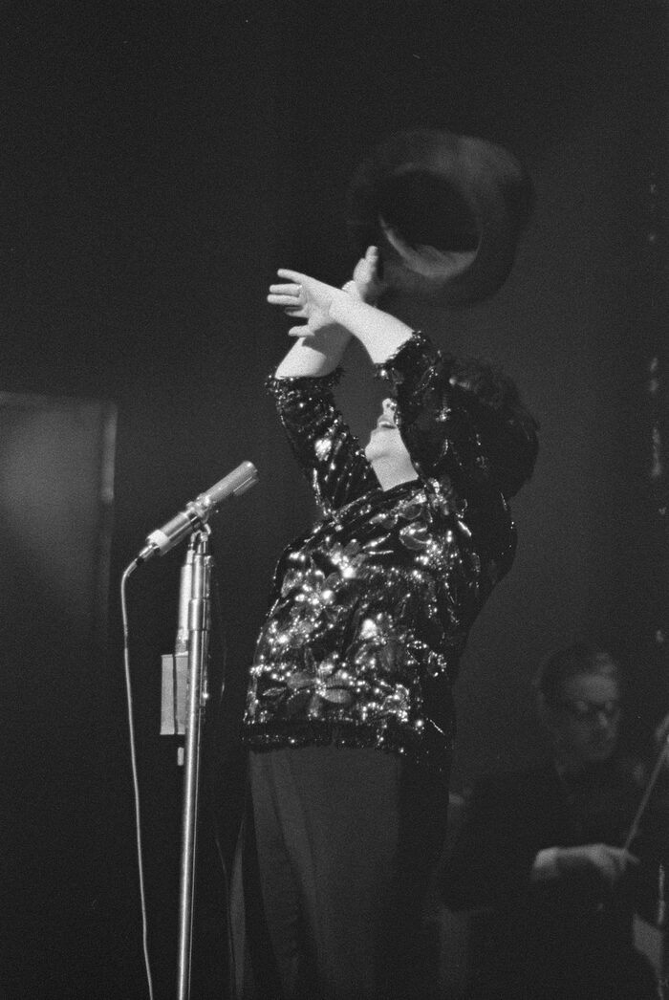
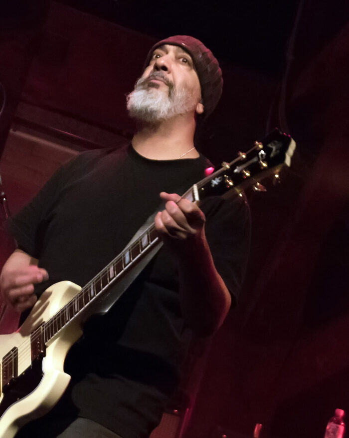

The Beatles cut Love Me Do with Ringo on drums
The Beatles held their first proper recording session at EMI's Abbey Road Studios, Ringo Starr's first date with the band, cutting Love Me Do and How Do You Do It under producer George Martin.
The Ringo-drummed take of Love Me Do recorded that afternoon was chosen for the band's debut single, the opening shot of Beatlemania.
The Youngbloods get bounced from The Tonight Show
Folk rock band the Youngbloods were pulled from their scheduled slot on The Tonight Show Starring Johnny Carson after a shouting match with the crew during afternoon rehearsal.
Carson sent them home on the air that night, a rare public flop for a band riding the reissued Get Together into the Top 5, per the Tonight Show episode log.
The Beatles film the Hey Jude promo
The Beatles spent the afternoon at Twickenham Film Studios filming color promotional clips for Hey Jude and Revolution, singing live over the backing tracks to dodge a Musicians' Union miming ban, per The Beatles Bible.
Around 300 fans were brought in for the singalong finale, giving the band its first audience in over two years and the spark that led straight into the Get Back project.
The Doors release People Are Strange
Elektra Records released the psychedelic rock band the Doors' People Are Strange, written by Jim Morrison and Robby Krieger after a late-night walk through Laurel Canyon.
The song's tack piano and theatrical unease pushed it to No. 12 on the Hot 100, cementing the band's place in the genre.
The first Jerry Lewis MDA Telethon goes on the air
The first Jerry Lewis Labor Day Telethon for the Muscular Dystrophy Association began broadcasting from New York's Americana Hotel, running through the night into Labor Day, per Mental Floss.
A single independent station carried it that first year, but the broadcast raised over a million dollars in pledges and grew into a decades-long television institution.

The Beatles' Help! hits No. 1
Help!, the title track from the Beatles' second film, reached No. 1 on the Billboard Hot 100, the band's ninth chart-topper in the United States.
It held the top spot for three weeks, right at the peak of international Beatlemania.
The Animals make their first US concert
The Animals played their first-ever American show at the Paramount Theatre in Brooklyn, reopened especially for the booking, just as House of the Rising Sun sat at No. 1 on the Hot 100.
The date kicked off the band's first US tour and helped establish the Animals as one of the heaviest-sounding acts of the British Invasion, per Music Times.
The Beach Boys sign autographs and play Denver
The surf rock band the Beach Boys drew crowds to a Woolworth's autograph session at Denver's Cherry Creek Shopping Center before playing the Moonlight Ballroom at Lakeside Amusement Park.
Teenage fans packed both stops, signing copies of Surfin' Safari and Surfin' U.S.A. as the band's early surf-pop fame hit full stride, per Beach Boys Gigs.
Murray the K's Holiday Revue packs the Brooklyn Fox
DJ Murray the K's Holiday Revue rolled on at the Brooklyn Fox Theatre with a bill stacked with the Ronettes, Stevie Wonder, Ben E. King, the Miracles, and Jan and Dean, per Concert Archives.
Package shows like this one threw R&B, soul, and pop acts onto the same stage for the same audience, a format that shaped how 1960s pop and vocal music was sold live.
The Beatles cut Love Me Do with Ringo on drums
The Beatles held their first proper recording session at EMI's Abbey Road Studios, Ringo Starr's first date with the band, cutting Love Me Do and How Do You Do It under producer George Martin, per The Beatles Bible.
The Ringo-drummed take of Love Me Do recorded that afternoon was chosen for the band's debut single, the opening shot of Beatlemania.
The Highwaymen's Michael hits No. 1
The Wesleyan University folk quintet the Highwaymen reached No. 1 on the Billboard Hot 100 with Michael, a 19th-century spiritual they had adapted for their debut album.
The gold-selling single held the top spot for two weeks and helped drive the collegiate folk boom of the early 1960s.
Please Mr. Postman debuts on the Hot 100
The Marvelettes' debut single Please Mr. Postman entered the Billboard Hot 100, the first chart appearance for the girl group and for the young Tamla label, part of the Motown, soul, and R&B story.
The song climbed to No. 1 by December, becoming Motown's first-ever pop chart-topper.
Ray Charles no-show sparks a riot in Portland
Ray Charles failed to appear for a scheduled headline show at Portland's Royal Ballroom, part of the city's R&B and soul touring circuit, and the waiting crowd tore the venue apart, drawing police and fire hoses.
The incident, caught on film, showed just how volatile the era's touring circuit could get and how devoted Charles's Pacific Northwest fans already were, per the Ray Charles Video Museum.
Judy Garland returns to the London Palladium
Judy Garland gave her second one-woman show at the London Palladium, a triumphant return to the stage less than a year after a near-fatal bout with hepatitis, per The Judy Room.
The two-act solo concert format she built for these shows became a template 1960s pop and vocal music vocalists followed for decades.

Future Soundgarden guitarist Kim Thayil is born
Kim Thayil was born in Seattle to Indian American parents, growing up to co-found Soundgarden and become one of grunge's defining lead guitarists.
His drop-D riffs and odd time signatures, built on a childhood diet of heavy rock and free jazz, would help define the Seattle sound decades later.

Frequently Asked Questions
What happened in 1960s music on September 4?
September 4 saw 14 verified music events across the decade.
They're headlined by the Beatles' first proper recording session in 1962, when Ringo Starr cut Love Me Do with the band for the first time.
What is the biggest 1960s music event on September 4?
The Beatles' first proper Abbey Road session on September 4, 1962, stands as the day's biggest event.
It was Ringo Starr's first date with the band, and the Love Me Do take recorded that afternoon became their debut single.
Did the Beatles do anything on September 4?
Yes, in three different years.
The Beatles cut Love Me Do with Ringo Starr in 1962, their single Help! hit No. 1 on the Billboard Hot 100 in 1965, and they filmed the promo clips for Hey Jude and Revolution at Twickenham in 1968.
What songs hit number one on September 4 in the 1960s?
The Highwaymen's Michael reached No. 1 on the Billboard Hot 100 on September 4, 1961.
The Beatles' Help! reached No. 1 on the same date in 1965.
Who was born on September 4 with a connection to rock music?
Kim Thayil, the guitarist who co-founded Soundgarden, was born in Seattle on September 4, 1960.
Did the Animals do anything notable on September 4?
Yes. On September 4, 1964, the Animals played their first-ever American concert at the Paramount Theatre in Brooklyn.
It came right as House of the Rising Sun sat at No. 1 on the Hot 100.